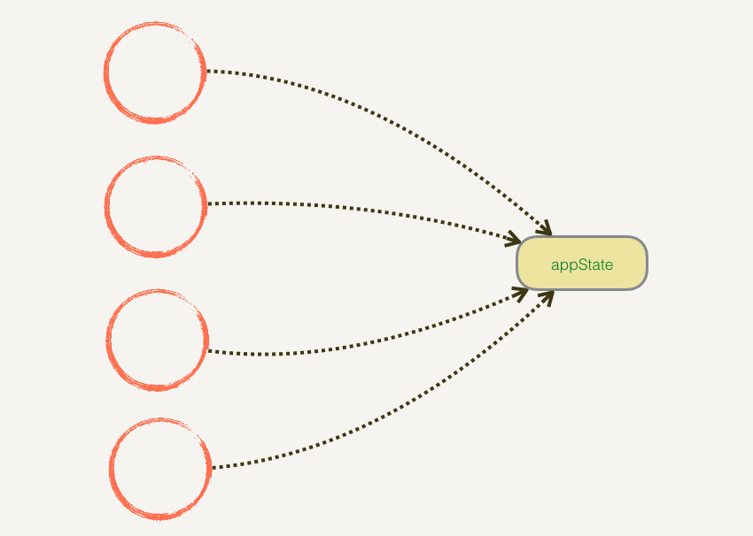
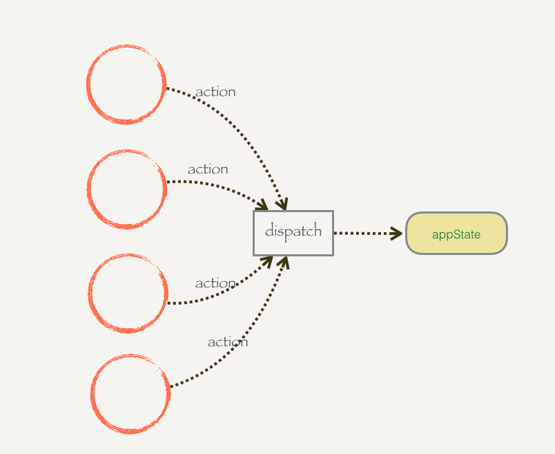

函数式编程的一些思考
函数式编程关心数据的映射，命令式编程关心解决问题的步骤 – nameoverflow
这里的映射就是数学上「函数」的概念——一种东西和另一种东西之间的对应关系。
这也是为什么「函数式编程」叫做「函数」式编程
正文开始
JavaScript 算不算 FP 语言？
JavaScript 因为有一等函数这张门票，大部分时候可以算 FP 语言。除了类型系统上由于 JavaScript 是动态类型语言，不容易模拟类型系统之外，大部分函数式特性都可以在 JS 里比较自然地实现。
函数作为一等公民
用函数作为主要载体的编程模式，用函数拆解，抽象一般的表达式。
从命令式和声明式的区别开始
题外话：关于 const:
常量不是对这个值本身的限制，而是对赋值的那个变量的限制。换句话说，这个值并没有因为 const 不可变，只是赋值本身不可变。比如值是个复杂值，内容仍然可以修改。
1 | const a = [1, 2, 3]; |
命令式：编写一条条命令去让计算机执行这些动作
声明式：我们写一写表达式，而不是一步步的具体指示
除了函数，递归其实是一个描述表达式的很好的方法。
好！我们以 SICP 上的一些 🌰 来看
看完这边，然后再看看递归在前端中的应用,其实场景还挺少的鹅。
说了这么多函数是第一公民，声明式，我们来看看函数到底有什么值得我们去用的地方。
关于尾递归优化
函数调用会在内存形成一个”调用记录”，又称”调用帧”（call frame），保存调用位置和内部变量等信息。如果在函数 A 的内部调用函数 B，那么在 A 的调用记录上方，还会形成一个 B 的调用记录。等到 B 运行结束，将结果返回到 A，B 的调用记录才会消失。如果函数 B 内部还调用函数 C，那就还有一个 C 的调用记录栈，以此类推。所有的调用记录，就形成一个”调用栈”（call stack）。
递归非常耗费内存，因为需要同时保存成千上百个调用记录，很容易发生栈溢出
一个阶乘函数，计算 n 的阶乘，最多需要保存 n 个调用记录
我们如果用尾递归的形式，那只要保存 1 个调用记录
纯函数的作用
“纯”: 相同的输入只能得到相同的输出
1 | const xs = [1, 2, 3, 4, 5]; |
辅助函数的工具
函数柯里化
一个接受 任意多个参数 的函数，如果执行的时候传入的参数不足，那么它会返回新的函数，新的函数会接受剩余的参数，直到所有参数都传入才执行操作。
1 | const f = (a,b,c,d) => {...} |
“安全”的操作
下面这种写法不能保证所有的 remove 都是正确执行的
1 | const append = function(parent, child) { |
再来看看下面这种写法，想要删除的节点都是来自删除添加的节点
1 | const append = function(parent, child) { |
简单的来总结一下，以函数作为主体，确保了函数之间不会相互干扰
函数组合
组合嘛，顾名思义，就是把几样东西给组合起来
1 | const toUpperCase = x => x.toUpperCase(); |
有个有趣的点就是这是和数学上的结合律很相似
1 | compose(toUpperCase, compose(head, reverse)) |
这边具体的在 /src/test/compose.test.js 里有案例
更强大的 Functor
我们从 Promise 来讲 Monad 是个啥
Promise is Monad
1 | const getB = a => new Promise((resolve, reject) => fetch(a, resolve)); |
所以 Monad 是个啥
我们可以实现一个简单的对象 P,然后将 A B 分开来传入这个对象 P,从而可以把回调拆分开
A(B) => P(A).then(B)
经过包装后，P 已经有 Promise 的雏形了
但是它还没有这样的能力
P(A).then(B).then(C).then(D)
那么 Monad 就是一个增强的对象 P，支持链式调用
在每次 Resolve 一个 Promise 时，我们需要判断两种情况：
如果被 Resolve 的内容仍然是 Promise（即所谓的
thenable），那么递归 Resolve 这个 Promise。如果被 Resolve 的内容不是 Promise，那么根据内容的具体情况（如对象、函数、基本类型等），去
fulfill或reject当前 Promise。
1 | Promise.resolve(1).then(console.log); |
这也就是披着 Promise 外衣的 Monad 的核心功能：
对于一个 P 这样装着某种内容的容器，我们能够递归地把容器一层层拆开，直接取出最里面装着的值。（就像洋葱一样）
之后我们就可以实现了链式调用的能力
1 | Promise(A) |
额外的好处是不管同步还是异步，都是一致处理，最后的结果也会是相同的。
1 | const add = x => x + 1; |
最简单的
P(A).then(B)实现里，它的P(A)相当于 Monad 中的unit接口，能够把任意值包装到 Monad 容器里。支持嵌套的 Promise 实现中，它的 then 背后其实是 FP 中的
join概念，在容器里还装着容器的时候，递归地把内层容器拆开，返回最底层装着的值。Promise 的链式调用背后，其实是 Monad 中的
bind概念。你可以扁平地串联一堆.then()，往里传入各种函数，Promise 能够帮你抹平同步和异步的差异，把这些函数逐个应用到容器里的值上。
说到这里，Monad 就是：
可以把值包装为容器
对于容器中的值，可以把函数应用在值上面（包括容器中嵌套容器，需要递归将函数应用到值上）
总结一下
Promise 消除回调地狱的关键（为什么可以和 Monad 联系起来）
拆分
A(B)为P(A).then(B)的形式。这其实是 Monad 来构建容器的unit不分同步还是异步，都能写
P(A).then(B).then(C)的形式，这是 Monad 的bind
函数式在 JavaScript(前端) 中的实践
React 中涉及到的函数式
渲染模式
UI = View(State)
Components as functions
1 | const Hello = props => <div>Hello {props.name}!</div>; |
Props 的不可变
Redux 优雅的修改共享状态
(state, action) => state
前端组件中的共享状态
A 状态会被 B,C 组件影响或者依赖
或者更多的，D E F G 函数用到这个状态，H I J K L 组件会影响这个状态


高阶组件
1 | import React, { Component } from 'react'; |
下面就是组件在具体页面中的使用了
这些组件的共同特点就是从一段请求中拿到数据放到组件中，那这段逻辑就是相同的，我们抽离出来放到高阶组件中去。高阶组件内部的包装组件和被包装组件之间通过 props 传递数据。
1 | import wrapWithLoadData from './wrapWithLoadData'; |
1 | import wrapWithLoadData from './wrapWithLoadData'; |
高阶组件的灵活性
比如我们现在的需求改成从 localStorage 中拿到某个数据，注入组件中。
1 | import React, { Component } from 'react'; |
我们甚至可以写个更高阶的

合理使用函数式（
Redux 的 Store 管理选择
- 某个状态只被 1 个组件依赖影响
那这个状态放在组件里的 state 是完全没问题的，没有其他组件可以访问到它
- 某个状态被多个组件依赖影响
🌰：Button => HTTP => Loading Model (Loading State)
那这个 Loading State 的状态是放在 <Button /> 组件里还是放在 <Loading /> 组件里呢？
其实都不合适，必然会导致另一个组件的依赖。解决方法是把这种状态抽离出来作为公共部分
这才是 Redux 这类状态管理解决的问题：管理多个组件所依赖或者影响的状态
总结
讲函数式和一些数学上的定理联系起来还是挺有趣的，比如 SICP 里的那个把求和的过程抽象出来。
用递归去写写函数也是很有趣的，把自己从命令式的一步步中解放出来。递归有趣在写出来不知道是对不对的，嘛，交给上帝就好了。
前端业务中的用到的函数式编程说多也不算多。
- 比如递归其实用的很少
- 那个柯里化的使用场景，其实是我找了很久才找到的（：我很多时候其实也并不能说服自己为什么要这么用呢
- 但是处理副作用去封装一些东西还是需要的
- 嗯，接着就是
Promise吧，其实就是Monad的一个典型的实践嘛 - React 和 Redux 的一些设计理念，比较贴近函数式的思想吧。
- 还有类型推导这些？可以试试
TypeScript嘛，我也还没正式的去学